Camera Motion Tracking
Introdução
Se ainda não leu, por favor comece pelo texto Recomendações e Introdução.
Neste texto vamos utilizar o ficheiro camera_tracking2.mp4 (dados e ficheiro disponibilizados no texto Recomendações e Introdução).
Exercício
3. Importar a sequência e adicionar marcadores
Iremos utilizar os primeiros 7 segundos do ficheiro MVI_1034.mov e a conversão já foi feita. Optámos por converter para TGA com resolução 1920x1080. Como o ficheiro foi gravado a 25 FPS, isto significa que vamos fazer tracking com 175 frames.
Inicie o Blender. Certifique-se que está em Blender Render e altere a resolução para 1920x1080 a 100%. Nas preferências do Blender, aumente a memória disponível para 1024 (ou mais, se tiver bastante memória RAM disponível).
Abra o Movie Clip Editor. Clique em Open e selecione a primeira frame. Altere a frame final para acertar com o número de frames que pretende utilizar. No nosso caso, vamos utilizar 175.
Com o cursor do rato em cima da frame, faça ALT+A para carregar as frames em cache. A linha de cor violeta identifica a dimensão da sequência de frames sendo que o violeta mais claro indica as frames armazenadas em memória.
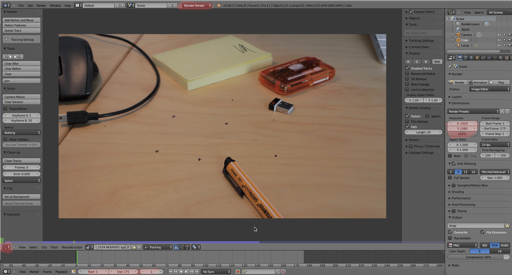Certifique-se de que está na frame 1 e pressione o botão Add Marker and Move para adicionar um marcador. Coloque o marcador no ponto que pretende seguir (track). Escolha locais que se destacam claramente, com bom contraste e com cantos.
Para mover um tracker, selecione-o e clique em G. Para mover com maior precisão, pressione o SHIFT enquanto desloca o tracker.
Em cima, na coluna das propriedades, lado direito, tem uma janela que permite ver a área do pattern (quadrado menor que envolve a âncora, o ponto que marca o local para fazer tracking). Para aumentar o pattern, clique em S.
O quadrado maior (ativado no painel de propriedades em Search) revela a área em que o algoritmo irá procurar o pattern. Se a filmagem tiver movimentos bruscos, poderá ser necessário aumentar a área de Search. Clique no triângulo, lado inferior direito, para aumentar/diminuir a área de Search.
Depois de colocar o seu tracker no local desejado, clique no botão para iniciar o tracking. Pode fazer tracking da sequência ou frame a frame e pode fazer tracking da frame em diante ou para trás.
Se tudo correr na perfeição, o tracker irá até ao fim e pode recomeçar até ter 8 trackers (mínimo!) completos. Mas raramente acontece...
Por vezes, o tracker perde o ponto a seguir. Quando isso acontece, a janela de preview fica em tom rosa escuro e o processo pára. Selecione o seu tracker, reposicione-o e volte a ativar o processo.
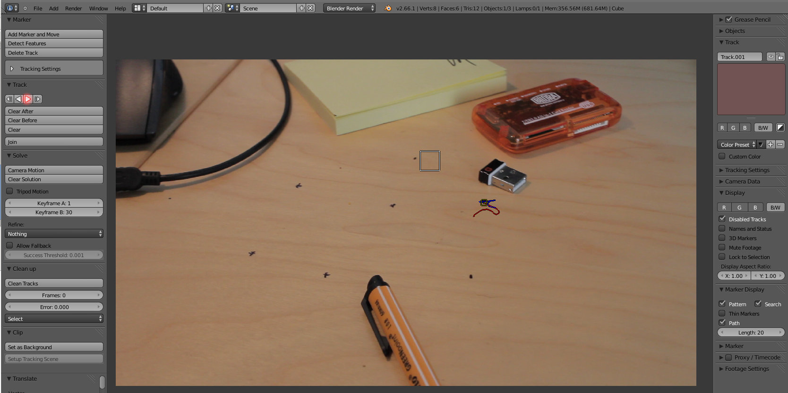Existem duas razões muito comuns para o tracker perder o ponto a seguir: demasiado blur ou movimento brusco fez com que a área de pattern saltasse para fora da área de Search. Neste último caso, poderá resolver a situação recomeçando o processo depois de aumentar a área de Search.
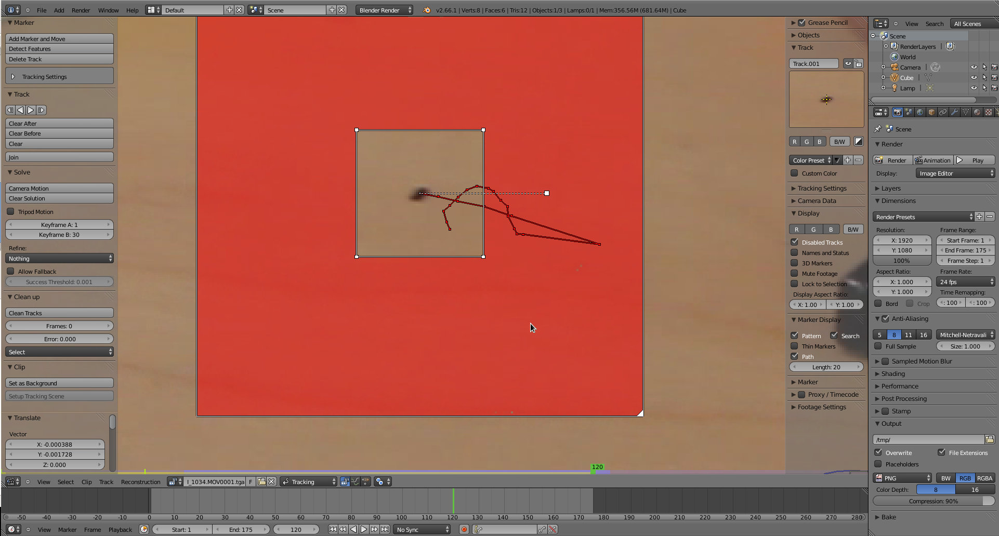Repita o processo até obter, no mínimo, 8 tracks completos. No final, avance e recue na timeline tentando ver se os trackers seguem o mesmo padrão de movimento e corrija se for caso disso.
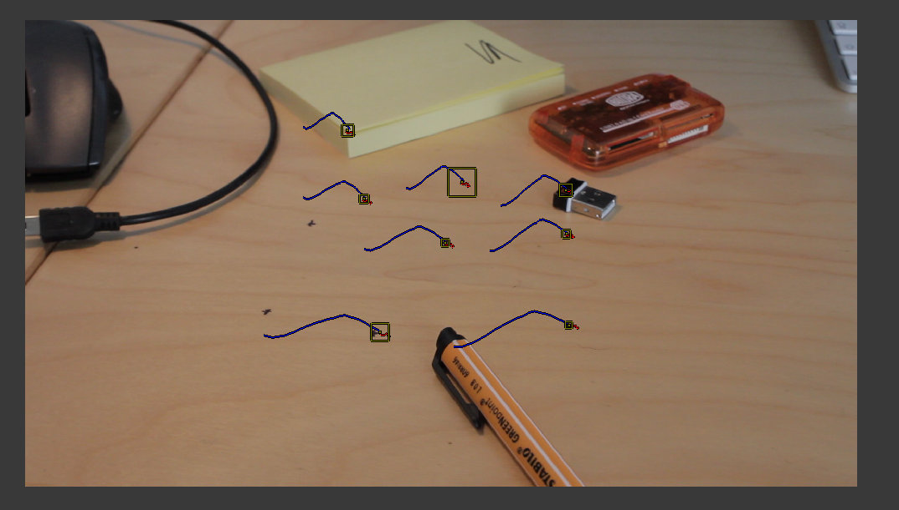4. Camara Data
Depois de concluído o processo anterior, é altura de introduzir os dados do dispositivo de captura.
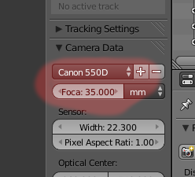No nosso caso, o vídeo foi filmado com uma Canon 550D e 35mm.
Caso o seu modelo não conste na lista do Blender, introduza os valores do sensor (especificações técnicas do dispositivo).
5. Solving Camera Motion
Selecione todos os trackers e clique em Camera Motion, no painel Solve.
O algoritmo irá calcular o movimento da câmara e irá apresentar uma margem de erro que permite avaliar a exatidão do tracking. Na imagem abaixo o erro é de 0.6622. Se desejar, pode ativar a opção Names and Status (barra de propriedades) para identificar os trackers que têm maior erro. Caso seja necessário, corrija os “saltos” existentes e volte a fazer o Camera Motion. Acima de 1.0 é um tracking fraco, deverá ser refinado. No entanto, quanto menor for o erro melhor é o resultado final.
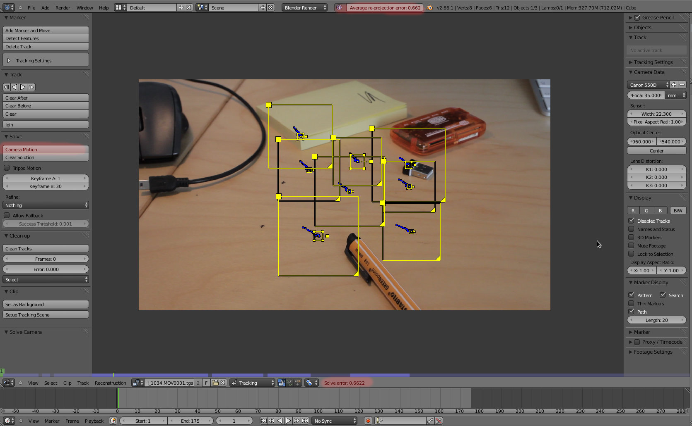Na barra à esquerda, a barra de ferramentas, escolha a opção Focus Length, K1, K2 em Refine para tentar baixar o erro tendo em conta a distorção da lente. Volte a clicar em Camera Motion para ver o novo erro. No nosso caso, o erro baixou ligeiramente para 0.6313.
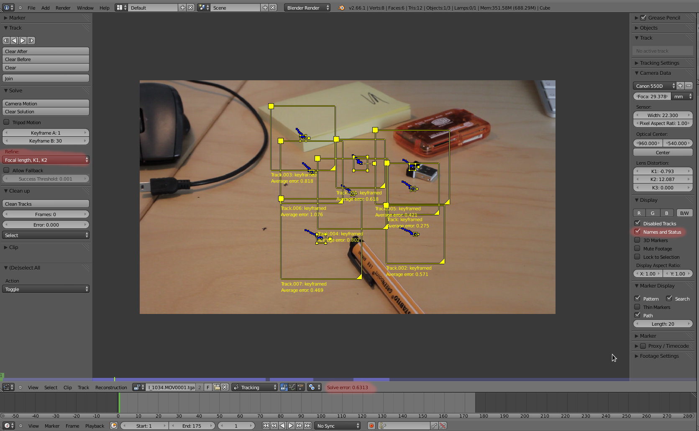Como temos poucos trackers (8 é o mínimo...), provavelmente a distorção K2 não está a ajudar muito, podendo até introduzir algum erro.
Clique em Clear Motion. Assegure-se que tem 35mm na lente e 0 no K1 e no K2.Selecione Focus Length, K1 (provavelmente o refinamento mais utilizado) e volte a clicar em Camera Motion. Desta feita obtemos um erro de 0.5663!
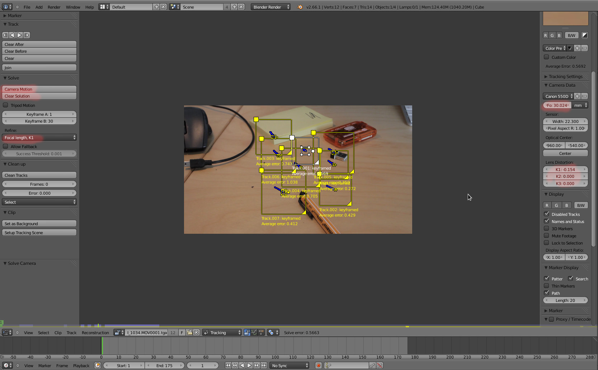6. Reconstruction
Divida a área de trabalho de modo a ter uma janela com o 3D View. Coloque-se em modo de visão de câmara na janela de 3D View.
No Movie Clip Editor, ative o modo Reconstruction. Clique em Set as Background para o clip ser visível na câmara do 3D View. Clique em Setup Tracking Scene para criar uma cena (inclui configuração de nós).
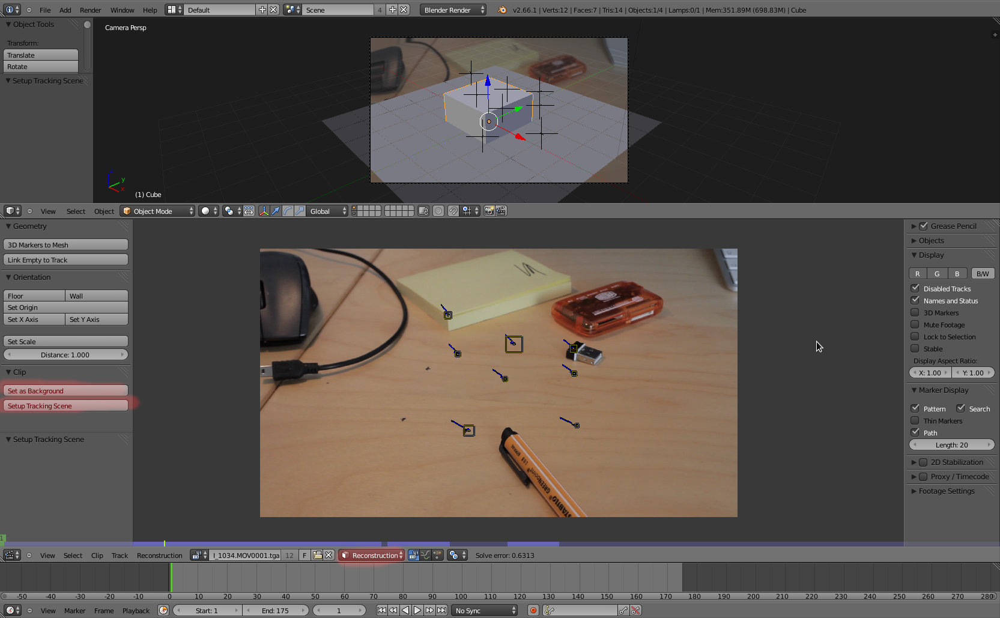No Movie Clip Editor, selecione 3 trackers que estejam no chão e clique em Floor. O Blender irá alinhar a grelha do 3D View com estes três trackers.
Selecione o tracker que estiver mais central e clique em Origin. O Blender irá definir este tracker como o ponto de origem, onde os eixos X, Y e Z se cruzam na grelha do 3D View.
Selecione outro tracker para definir o eixo X (pode fazer o mesmo para o Y).
Finalmente, selecione dois trackers para definir a escala. A distância entre estes dois trackers irá ser equivalente a 1 Blender Unit (1 quadrado da grelha).
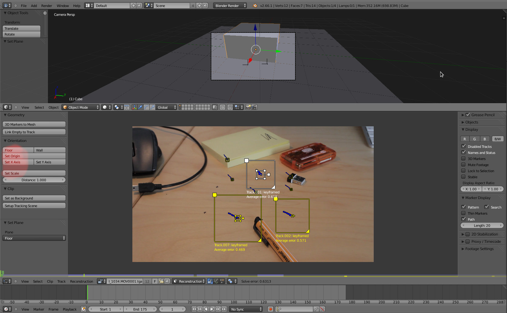Nesta altura, através da câmara na janela 3D View já é possível colocar elementos e ver a sequência de imagens através do ALT+A. Contudo, como a imagem na janela de 3D View não pode ser distorcida (tendo em conta a Focal Length e os valores de K1), é possível que alguns trackers não surjam no local correto e pareçam deslizar. Na nossa cena não é muito óbvio porque não temos trackers próximos das bordas da imagem, onde a distorção é mais visível.
A solução é introduzir um undistort na sequência de imagens. Na janela 3D View assegure-se que tem a opção Render Undistorted ativa. Se quiser também pode ativar a mesma opção no Movie Clip Editor para comparar. No entanto, como já não vamos utilizar esta janela, pode deixar a opção no Movie Clip Editor desativada.
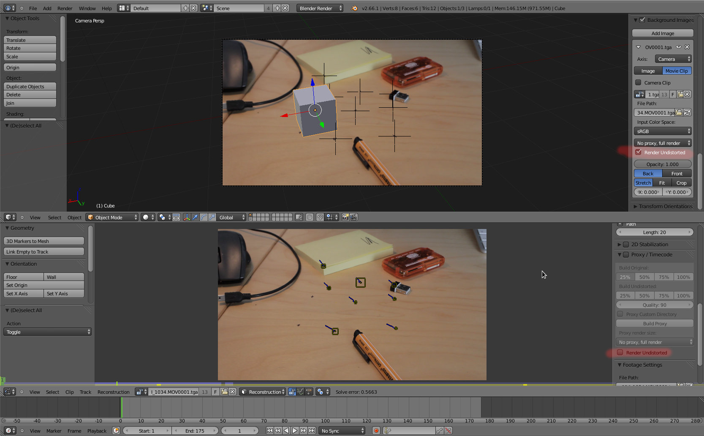- Agora é uma questão de...
- ajustar a cena que pretende criar;
- trabalhar a iluminação;
- trabalhar no editor de nós e...
renderizar!